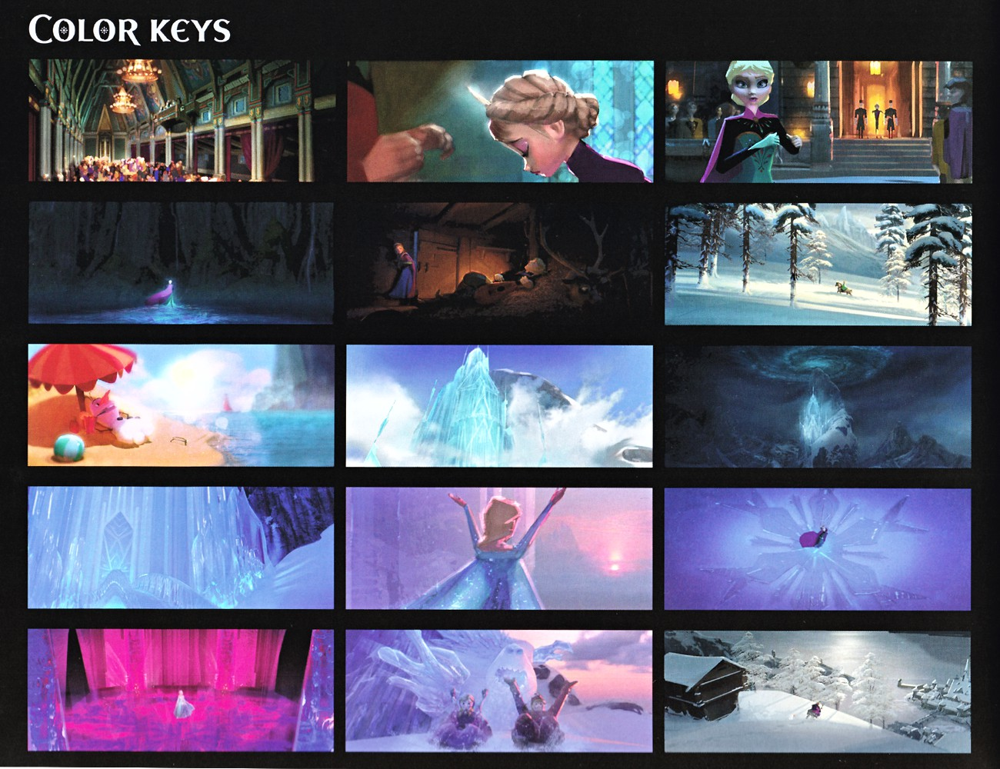

📖 设定集 · 制作幕后
色彩脚本
用色彩讲述故事
5
本卷页数
🎨
设定集
中/英
双语
美术总监 Michael Giaimo 的核心宣言：雪最多的电影，恰恰要最不「白」。日出用暖桃与鹅黄，日落用深粉与蓝，月光下是浓郁的靛紫——「没有一场雪景是缺乏色彩的」。设定集里的色彩关键帧页（同一条街在不同时刻的9格研…
🎨 制作幕后
色彩脚本
「白色是一块画布」——从F1的冷暖对比到F2的秋色成熟，色彩如何充当全片的情绪乐谱。
15
关键帧
2部
电影
冷暖
主调
原书
逐页核对
🎨 色彩脚本（Color Script）是动画制作中的关键环节：在正式制作前，用一系列色彩缩略图规划全片的色彩节奏和情绪曲线。它不是最终画面，而是「色彩的乐谱」——紧张的场景用高对比冷色，温暖的场景用低对比暖色，转折点用色彩的突变来强调。
📖 「白色是一块画布」
美术总监 Michael Giaimo 的核心宣言：雪最多的电影，恰恰要最不「白」。日出用暖桃与鹅黄，日落用深粉与蓝，月光下是浓郁的靛紫——「没有一场雪景是缺乏色彩的」。设定集里的色彩关键帧页（同一条街在不同时刻的9格研究）就是这一理念最直观的证据。
在《冰雪奇缘》中色彩脚本尤其重要，因为「冷与暖」本身就是故事主题：艾莎的魔法带来永恒的冬天（冷色），安娜的爱带回春天（暖色）——色彩的转变本身就是叙事。
❄️ F1色彩旅程
🌅 第一幕：暖金与期待
F1开篇使用暖金色调——童年姐妹在大厅玩雪的温馨、加冕日的庄重与兴奋，都用温暖的色彩传达。即使是父母去世的悲伤段落，也用柔和的灰色而非冰冷的蓝色，保持情感的温度。
🏔️ 第二幕：冷蓝与自由
艾莎逃往北山后，色彩急转直下——《Let It Go》段落从灰暗的山崖逐渐变为璀璨的冰蓝色，是全片最经典的色彩转变。冰宫的冷蓝既壮丽又孤独，完美传达艾莎「自由但孤立」的状态。
🌸 第三幕：春暖与和解
结局中艾莎学会用爱控制魔法，冰雪融化、春天回归，色彩从冷蓝转为暖金。安娜的绿色春装与阿伦黛尔的鲜花共同构成「希望」的视觉象征。

色彩关键帧总览（15格）
15格色彩关键帧浓缩全片色彩旅程：加冕日的暖金、北山的冷蓝、真爱解冻的暖色回归——色彩脚本就是全片「情绪的乐谱」。

阿伦黛尔雪中色彩关键帧
「雪后的阿伦黛尔」9格色彩研究：同一条街在清晨、正午、黄昏与月光下的色彩变化——证明 Giaimo 的名言「白色是一块可以作画的画布」。

Giaimo 服装色彩稿
制作设计师 Michael Giaimo 的服装色彩研究：浓郁饱和的宝石色调从早期设计一路保留到安娜的最终配色——服装即性格的色彩宣言。
🍂 F2色彩旅程：秋天的成熟
F2从一开始就决定「必须是秋天」——部分是设计上的理由（秋色调色板丰富浓郁），部分是叙事的理由：Chris Buck 说「春天是重生，夏天是青春，而秋天是一年的成熟期，这些角色正在成熟」。暖橙与紫红的秋叶对抗冷调的天空，让环境「拉扯」角色的视觉注意力成为真正的设计挑战。
四灵各自带来不同的色彩：风灵的透明、火灵布鲁尼的橙红、水灵诺克的深蓝、地灵的土黄。到阿塔霍兰段落，色彩转入冰蓝并逐渐加深——「展示你自己」的六格色彩概念把这段旅程画成了视觉交响总谱；而《The Next Right Thing》的摄影论述则展示了色彩与镜头如何共同完成安娜的低谷戏。

秋日河谷概念图
F2秋色概念画：橙红森林环抱静谧河谷，紫雾与倒影构成「秋=成熟」的色彩主题——F2全片秋日调色板的代表画面。

「Show Yourself」色彩概念
Lisa Keene 与 Brittney Lee 的六格色彩概念：菱形冰壁、光柱阶梯与雪花显圣——「展示你自己」段落的视觉交响总谱。

「The Next Right Thing」摄影论述
摄影指导 Scott Beattie 解析安娜在失落洞窟的低谷戏：镜头静止而宽广让安娜显得渺小脆弱，第一缕光出现时镜头开始移动——摄影与情绪同频。
💡 色彩脚本的力量
色彩脚本是动画电影中最「隐形」却最强大的叙事工具：观众可能不会注意到色彩的变化，但会感受到情绪的起伏——紧张时心跳加速、温暖时感到安心。这种「潜意识的叙事」正是色彩脚本的力量所在。
📌 本页要点
你正在阅读《设定集》卷的「色彩脚本」。本页由电影正典、官方设定集与官方小说综合梳理，可作为该主题的速查入口；右侧目录可快速跳转到本页各小节。